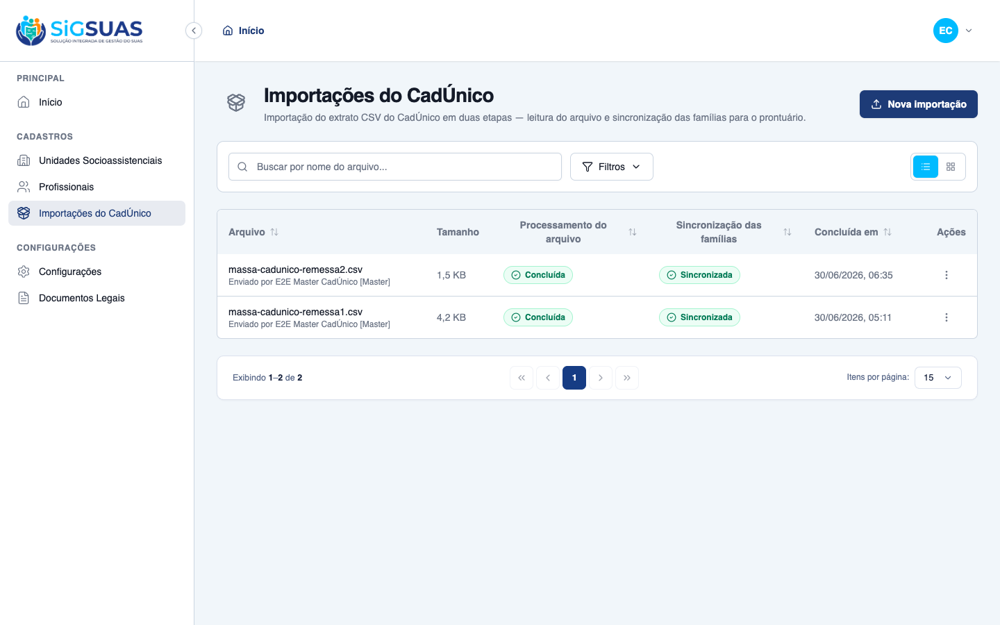
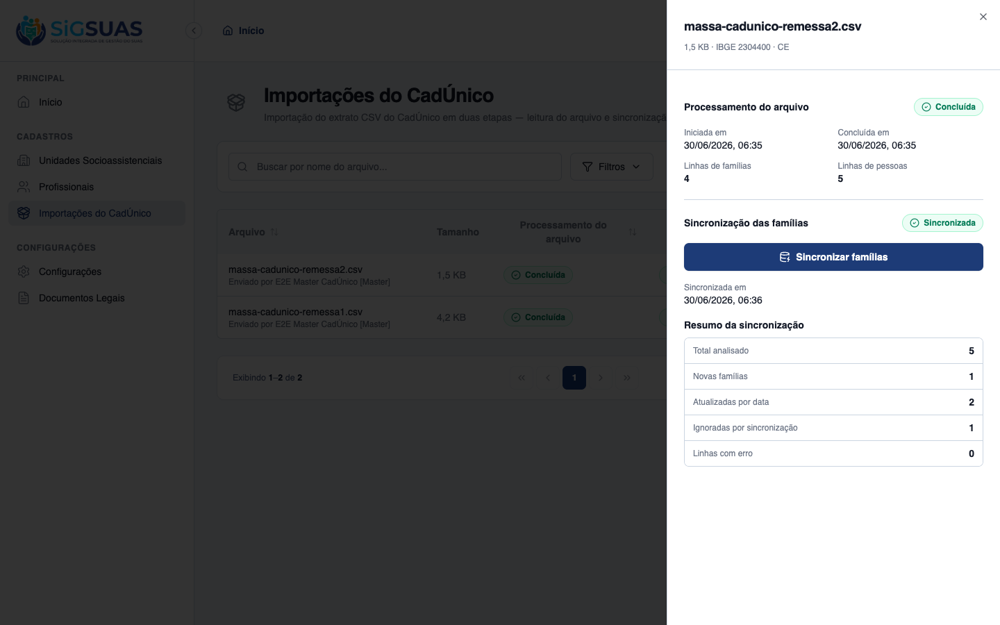
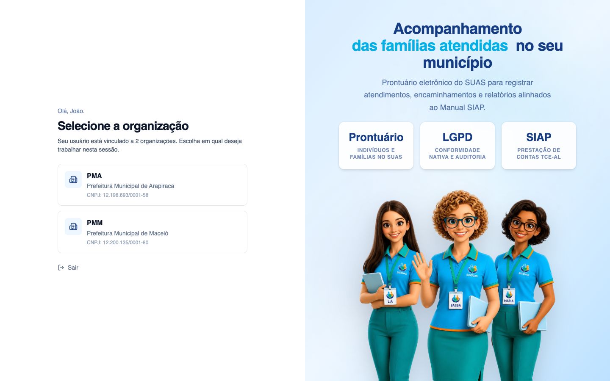
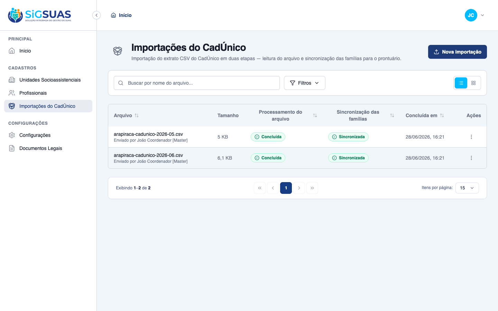
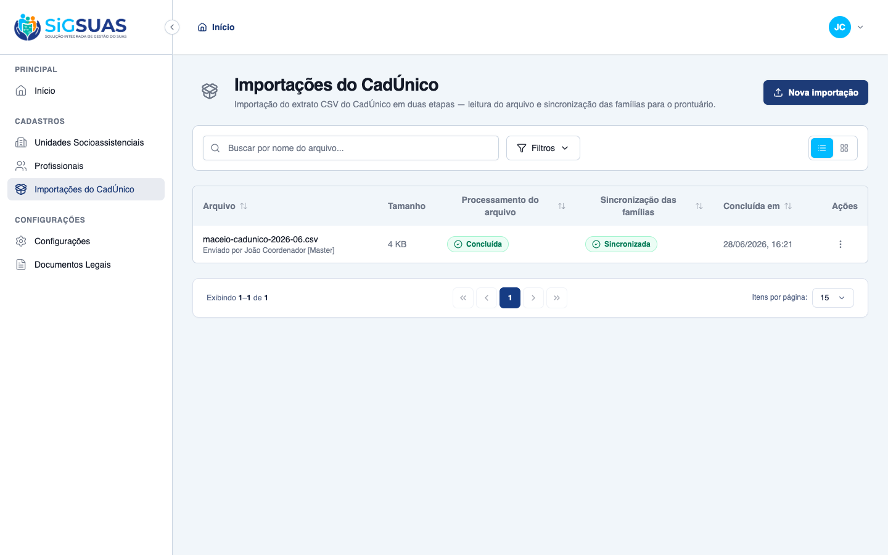

História de auditoria/gestão: o histórico de importações do CadÚnico do tenant, com data/hora, nome do arquivo, resultado estatístico e executor (RN05), isolado por município (RN10). Foram verificados os 2 critérios de aceite — CA11 (histórico auditável) dirigido ao vivo no client, e CA12 (isolamento multi-tenant) demonstrado na UI com um mesmo usuário vinculado a duas organizações (PMA e PMM): ao trocar a organização ativa, o histórico muda para os lotes do respectivo município, sem vazamento entre tenants — reforçado pela suíte Pest (listagem só do tenant + 404 cross-tenant). Resultado: CA11 e CA12 ATENDIDOS.
| CA | Critério | Status |
|---|---|---|
| CA11 | Consulta ao histórico auditável | ATENDIDO · navegador |
| CA12 | Garantia de isolamento multi-tenant | ATENDIDO · navegador |
Critério (Gherkin): Dado que sou Master ou um Profissional com permissão, Quando visito o menu de Histórico de Importações, Então visualizo uma listagem cronológica indicando a data/hora, nome do arquivo, resultado estatístico e o nome do Profissional ou Usuário (RN05) que executou o procedimento.
Como foi testado: Logado como Master (CPF 52998224725), acessar Cadastros › Importações do CadÚnico. Conferir a listagem e, em um lote, abrir Mais ações › Ver detalhes para inspecionar o resultado estatístico.


Critério (Gherkin): Dado que estou consultando o histórico de importações, Quando a lista é carregada, Então o sistema exibe apenas os lotes processados no meu próprio município, impossibilitando a visualização de dados ou atividades de outros tenants da plataforma.
Como foi testado: Demonstração com um mesmo usuário vinculado a duas organizações — o coordenador João Coordenador (CPF 15543849079), Master em PMA (Prefeitura de Arapiraca) e PMM (Prefeitura de Maceió). Ao logar, o sistema apresenta o gate Selecione a organização. Entrando em PMA, abrir Importações do CadÚnico e conferir o histórico; em seguida, trocar a sessão para PMM (re-login → selecionar a outra organização → o interceptor passa a enviar outro X-Tenant-UUID) e conferir o histórico novamente. Os dois conjuntos devem ser disjuntos.



PASS Tests\Feature\Api\Client\CadunicoImportControllerTest ✓ it validates a well-formed CSV and returns an upload token (CA01) 0.61s ✓ it rejects a CSV from a different município (RN01) 0.03s ✓ it rejects validation when the tenant has no município configured 0.03s ✓ it rejects a CSV with a divergent header (CA02) 0.03s ✓ it blocks validation when an import is already active (RN11/CA07) 0.03s ✓ it confirms the import and queues stage 1 (HU02) 0.03s ✓ it records the executor label with [Master] suffix when not a profe… 0.03s ✓ it rejects store with an unknown upload token 0.03s ✓ it does not sync an import that is not completed 0.03s ✓ it queues stage 2 when the import is completed (Etapa 2 manual) 0.03s ✓ it blocks sync when another batch is active in the tenant (RN11) 0.03s ✓ it lists only the tenant own history (CA12) 0.04s ✓ it returns 404 for a cross-tenant import (CA12/RN10) 0.03s ✓ it hides the module from an operador without the permission (CA03) 0.03s ✓ it stores a generic failure message without leaking exception detai… 0.04s Tests: 15 passed (42 assertions) Duration: 1.15s